Streaks Fall. Contenders Get Tested.
Twelve finals. The Lakers finally lose. Atlanta shocks Oklahoma City. Denver survives Boston. Miami outscores Milwaukee. Our complete 4DK review of the night.
Philadelphia 76ers 121 — Orlando Magic 116
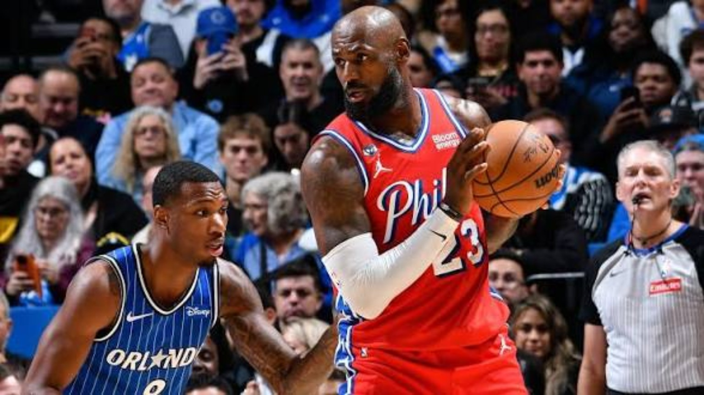
Box Score Spotlight: Joel Embiid 26 PTS, 6 REB, 7 AST; VJ Edgecombe 24 PTS, 8 REB, 6 AST; LeBron James 22 PTS; Franz Wagner 27 PTS, 11 AST
4DK Deep Dive | What We Saw & What Comes Next
Philadelphia did not simply win a close game in Orlando; we watched a contender absorb a 17-point deficit while missing Tyrese Maxey, Jaylen Brown and Dean Wade. The Sixers have multiple ways to manufacture offense. Embiid remains the half-court pressure point, forcing defensive decisions and earning 15 free throws, but this was also a night for the wings to prove they can create solutions when the usual rotation is compromised.
The late-game combination was revealing. Edgecombe scored 13 in the fourth and knocked down a three off a no-look LeBron pass to put Philadelphia ahead 114-112 with 1:36 left. Anfernee Simons then hit a late three that effectively shut the door. That sequence shows why the Embiid–LeBron–Edgecombe partnership is difficult to reduce to individual scoring totals: one bends the defense, one sees the floor ahead of the rotation, and one has the burst and confidence to finish the play.
Orlando got 27 points and 11 assists from Franz Wagner and led for 41 minutes. But nine makes in 17 free throws left too many points on the table. Our 4DK verdict: Philadelphia’s 13-3 start has genuine depth behind it, while Orlando must turn impressive stretches into four-quarter execution against East contenders.
Miami Heat 137 — Milwaukee Bucks 130
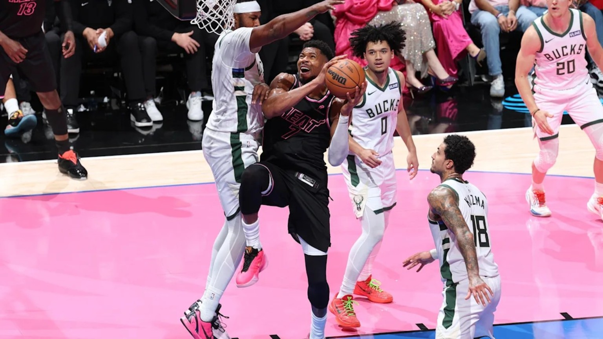
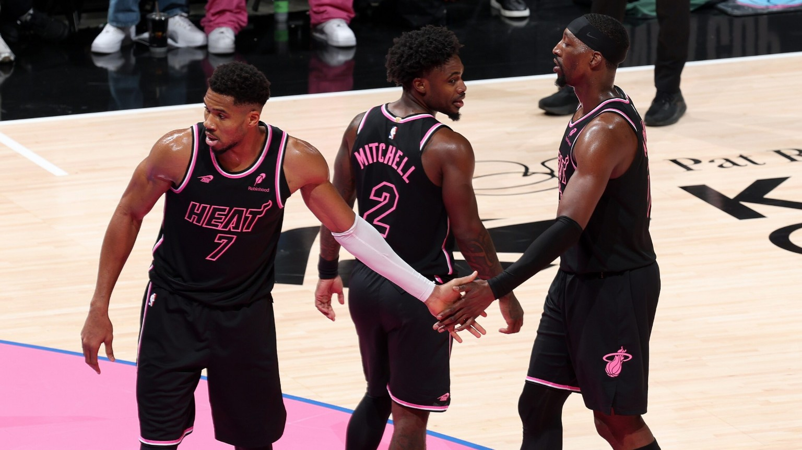
Box Score Spotlight: Giannis Antetokounmpo 27 PTS, 14 REB, 9 AST; Bam Adebayo 26 PTS; Davion Mitchell 24 PTS; Kyle Kuzma 26 PTS (MIL)
4DK Lead Feature | The Other Side of the Rivalry
For thirteen seasons, Giannis Antetokounmpo was the reason Milwaukee could walk into almost any arena believing it had the best player on the floor. He turned a raw 2013 draft gamble into two MVP awards and the 2021 championship. In every meaningful Heat–Bucks confrontation, Miami had to solve Giannis. On Wednesday, the equation flipped: Milwaukee had to defend the player who defined its modern identity. The jersey switch was already surreal; the standings made it painful. Miami won its sixth straight, while Milwaukee fell to 1–14 with an eleventh consecutive defeat.
The Emotional Reversal | A Champion Becomes the Opponent
Think back to the postseason chapters these franchises wrote against each other. Milwaukee swept Miami in 2021 on the way to its title. Two years later, the eighth-seeded Heat stunned the top-seeded Bucks. Giannis was not a supporting character in that rivalry; he was its central problem. Now he is sharing the frontcourt with Bam Adebayo, the defender Miami once leaned on to absorb his physicality. The player Milwaukee fans once celebrated for bulldozing opposing defenses was doing that work against Milwaukee instead.
The atmosphere sharpened the contrast. Giannis heard MVP chants from a Miami crowd. The Heat also welcomed back Tyler Herro, Jaime Jaquez Jr., Kel’el Ware and Kasparas Jakučionis, four players sent to Milwaukee in the summer trade. Those reunions underscore the human cost of a franchise-altering deal: familiar teammates become opponents, familiar uniforms become reminders, and neither side can pretend the history disappeared. Giannis publicly treated the matchup as another game. From a franchise perspective, it was anything but.
The Basketball | Miami No Longer Needs Giannis to Do Everything
Giannis finished with 27 points, 14 rebounds and nine assists, but the most revealing number might be when he scored his first basket: late in the first half, with Miami already ahead by 24. Bam had 21 of his 26 points before halftime. Davion Mitchell supplied 24 points and six assists, hitting six of seven three-point attempts. Miami made 22 threes as a team and built a 74–48 halftime lead. That is a different kind of threat than simply asking Giannis to overpower a set defense. The Heat can hurt an opponent before their superstar has even found his scoring rhythm.
Our 4DK read: the Giannis–Bam partnership works when Bam is aggressive enough to punish a defense that collapses toward Giannis, and when Mitchell and the wings make the extra pass matter. Giannis can initiate, screen, finish and create advantages for shooters; Bam can attack the space left behind. But a hot shooting night is not automatically proof of championship spacing. Miami still must show that its half-court offense holds up when a disciplined playoff defense packs the paint, changes coverages and forces its secondary creators to make decisions under pressure.
Milwaukee at 1–14 | The Difference Between Losing a Star and Losing an Identity
Milwaukee is not merely struggling without a high-volume scorer. It is discovering how much organizational certainty came from having an MVP-caliber foundation. For years, Giannis supplied a defensive backstop, transition pressure, easy paint offense and the expectation that the Bucks belonged in the playoff conversation. Without him, those advantages must be manufactured collectively. The Bucks have pieces worth evaluating, but a 1–14 record and the worst 15-game start in franchise history are evidence of a bottom-tier team right now — not proof that every young player lacks promise.
Kyle Kuzma scored 26, rookie Brayden Burries added 20, and Jakučionis contributed 20 off the bench. Those performances offer developmental threads, not yet a cohesive identity. The four former Heat players arrived as part of the return for Giannis, and Milwaukee must determine which of them can become foundational rather than simply productive. Who organizes the offense when the first action stalls? Who sets the defensive tone? Can the young players grow together without confusing individual opportunity for team progress? Those questions matter more than trying to imitate the Giannis-era Bucks with a different roster.
Turning Point | A Seven-Point Final That Hid a 30-Point Gap
The 137–130 final score suggests a shootout decided late. The game itself was more lopsided: Miami never trailed, led by 26 at halftime and pushed the advantage to 30. Milwaukee closed on a 30–9 run over the final six-and-a-half minutes, which deserves recognition for effort but cannot erase the first three quarters. The more useful film question for Miami is why a comfortable lead became so loose; the more useful question for Milwaukee is why the urgency and execution arrived only after the outcome was nearly settled.
Where Both Franchises Go | Two Timelines Moving in Opposite Directions
Miami started 0–4 and is now 9–6, having won nine of its last eleven. That turnaround gives the Heat a credible case as a rising Eastern Conference threat, but six straight wins are a launch point, not a championship guarantee. The next test is whether this Giannis–Bam ecosystem can sustain its offensive balance against the conference’s best defenses. Milwaukee, meanwhile, has to decide how much of this season is about stabilizing the present and how much is about building the next competitive core. At 1–14, the word “rebuild” is no longer an abstract possibility.
The 4DK Verdict: This was not simply Giannis getting revenge. It was the visual proof of how one transaction can redraw a rivalry. Miami now owns the superstar Milwaukee once built around, while the Bucks are trying to discover who they are without the man who made them contenders. We can respect Milwaukee’s history and its young players while acknowledging the present: right now, the Heat look like a team finding a ceiling, and the Bucks look like a team searching for a floor. For the first time in this rivalry, Miami was not trying to survive Giannis. Milwaukee was.
Houston Rockets 119 — Indiana Pacers 104
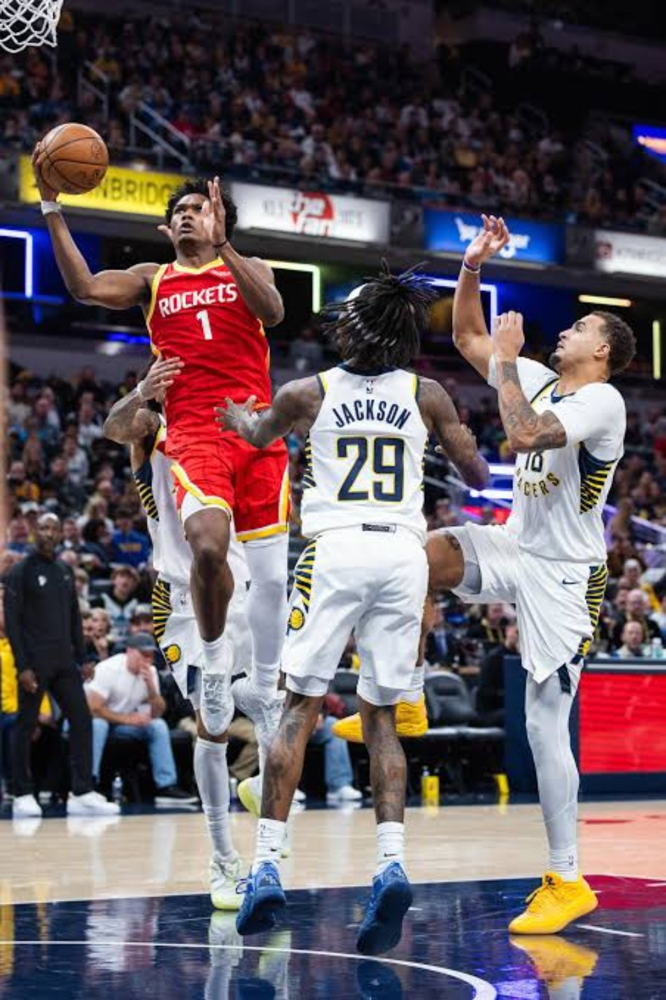
Box Score Spotlight: Kevin Durant 21 PTS; Reed Sheppard 20 PTS, 6 3PM; Pascal Siakam 24 PTS (IND)
4DK Deep Dive | What We Saw & What Comes Next
Houston’s 119-104 road win offered a useful reminder that this roster can produce offense from different places. Kevin Durant supplied 21 points and Reed Sheppard hit six threes on his way to 20. Sheppard’s perimeter threat matters because it punishes opponents for loading toward Houston’s established creators and makes the spacing less dependent on one star.
Indiana got 24 from Pascal Siakam but lacked enough sustained offense to stay with Houston. We also have to track the reported injury to Alperen Sengun rather than treating this as a routine victory: if he misses time, Houston’s playmaking structure and interior options change. Our 4DK verdict: the Rockets showed scoring flexibility, but the next stretch will tell us how resilient the system is if its frontcourt rotation is compromised.
Memphis Grizzlies 124 — Cleveland Cavaliers 121
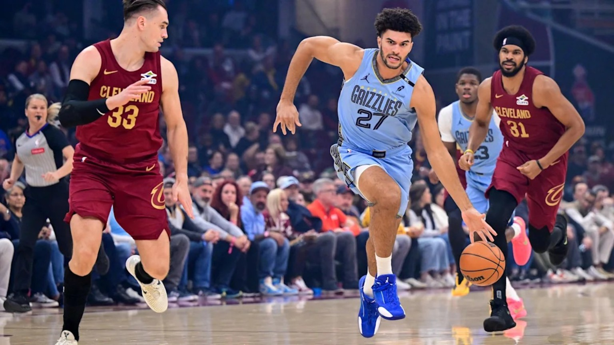
Box Score Spotlight: Cam Spencer 26 PTS, 7 AST; Taylor Hendricks 20 PTS; Cameron Boozer 18 PTS, 7 REB; Donovan Mitchell 34 PTS (CLE)
4DK Deep Dive | What We Saw & What Comes Next
At 11-4, we have to stop talking about Memphis as merely a fun young team. The Grizzlies just secured a franchise-record eighth consecutive road victory, and they did it in Cleveland against a team capable of punishing inexperienced opponents. Cam Spencer’s 26 points and seven assists gave Memphis offensive direction; Taylor Hendricks delivered 20, and rookie Cameron Boozer supplied 18 with defensive activity. This is not a one-player hot streak masquerading as a team identity.
The closing stretch is where our respect grows. Donovan Mitchell’s 34 points helped Cleveland lead 119-116 with 2:43 remaining, but Memphis closed 8-2. Hendricks’ two free throws with 2.3 seconds left were part of that finish. Young teams often look dangerous until a hostile road building forces them to execute late. Memphis is answering that test.
Our 4DK verdict: 11-4 and eight straight road wins put the Grizzlies in the serious Western conversation. We still want to see their half-court offense against playoff-level scouting and how the young core handles the pressure of being hunted, not overlooked. Cleveland, meanwhile, has to examine why Mitchell’s big night was not enough to close a home game.
Chicago Bulls 137 — Brooklyn Nets 107
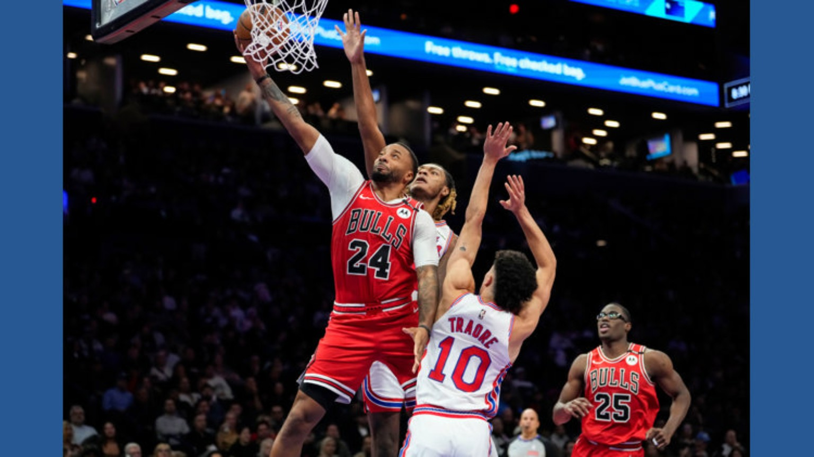
Box Score Spotlight: Matas Buzelis 25 PTS; Josh Giddey 18 PTS, 14 REB, 9 AST; Egor Demin 22 PTS (BKN)
4DK Deep Dive | What We Saw & What Comes Next
Chicago’s 137-107 win was about more than a hot night: eight Bulls reached double figures and the team made a franchise-record 15 threes in the first half. Giddey’s 18-14-9 line showed how a big playmaking guard can organize the offense without needing to dominate the shot count. Buzelis’ 25 gave Chicago an aggressive finishing option.
The caution is the opponent. Brooklyn offered little resistance and trailed by as many as 37. Our 4DK verdict: Chicago has offensive variety worth developing, but the next step is carrying this ball movement into games where defensive pressure disrupts its first options. Brooklyn needs answers for its point-of-attack defense and transition organization.
Washington Wizards 103 — Toronto Raptors 99
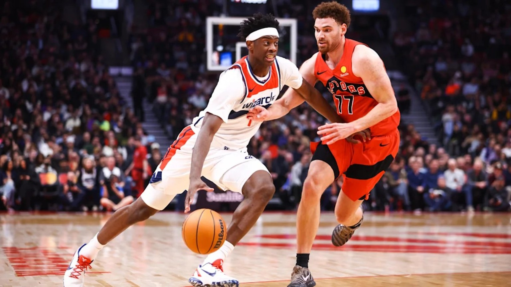
Box Score Spotlight: Anthony Davis 25 PTS, 14 REB; AJ Dybantsa 23 PTS, 12 REB; Kyshawn George 20 PTS; Immanuel Quickley 24 PTS (TOR)
4DK Deep Dive | What We Saw & What Comes Next
Washington snapped an eight-game skid by winning a game that demanded defensive patience rather than a scoring explosion. Anthony Davis’ 25 and 14 anchored the paint, while rookie AJ Dybantsa added 23 and 12. That combination matters for Washington’s future: Davis provides a standard for interior positioning and two-way effort while Dybantsa learns to translate his tools into productive NBA possessions.
Kyshawn George’s three capped an 11-0 fourth-quarter run that put Washington up 91-82. Toronto was missing Scottie Barnes, RJ Barrett and Kawhi Leonard, so we should not overstate the result. But the 4DK verdict is that rebuilding teams need evidence they can close with discipline. Washington found some; Toronto’s depleted lineup still has to generate more reliable offense.
Detroit Pistons 122 — New Orleans Pelicans 109
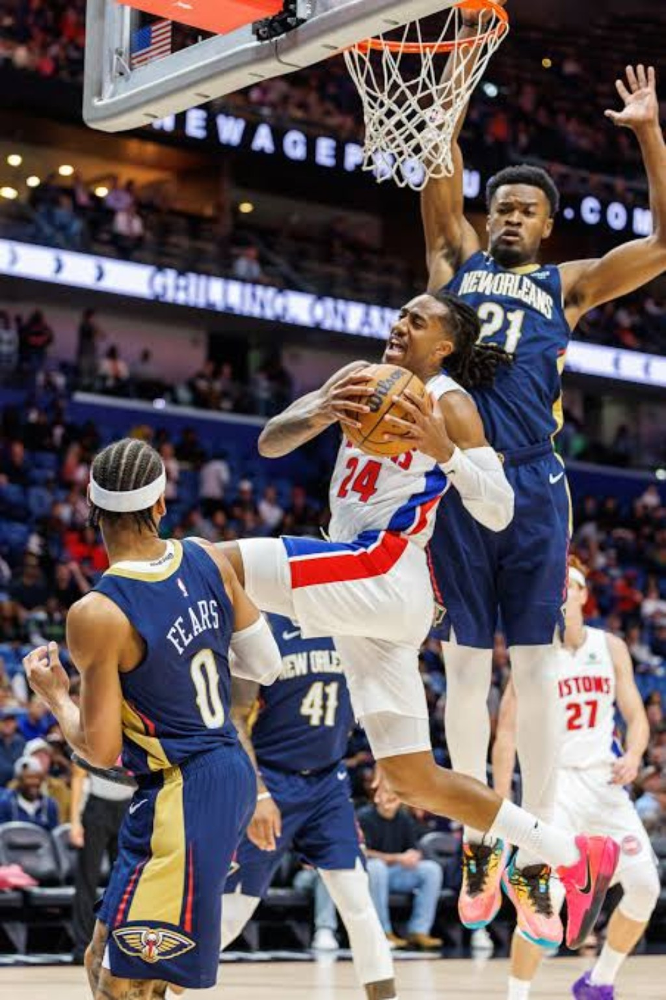
Box Score Spotlight: John Collins 20 PTS; Javonte Green 18 PTS; Daniss Jenkins 17 PTS, 9 AST; Paul Reed 17 PTS (DET)
4DK Deep Dive | What We Saw & What Comes Next
The most important detail in Detroit’s 122-109 win is who was not on the floor. Cade Cunningham sat with knee soreness on the second night of a back-to-back, yet the Pistons followed their statement win over San Antonio with another convincing road result. Seven Detroit players scored in double figures. That is the kind of roster resilience that separates a promising team from one whose entire identity collapses when its lead creator sits.
Daniss Jenkins deserves a real 4DK spotlight. After his 25-point performance helped end the Spurs’ 12-game winning streak, he delivered 17 points and nine assists against New Orleans. Those numbers point to a guard growing into meaningful responsibility: not just making shots, but connecting lineups and keeping the offense functional. We are not declaring him a finished product; we are saying Detroit has a legitimate reason to trust him with more creation.
John Collins supplied 20, Javonte Green 18 and Paul Reed 17 on efficient shooting. Detroit has won five of six and completed a 3-1 trip. Our verdict: this team is developing an identity that survives absences. The next question is how these contributors complement Cade when he returns, rather than simply replacing his production for a night.
Atlanta Hawks 117 — Oklahoma City Thunder 112
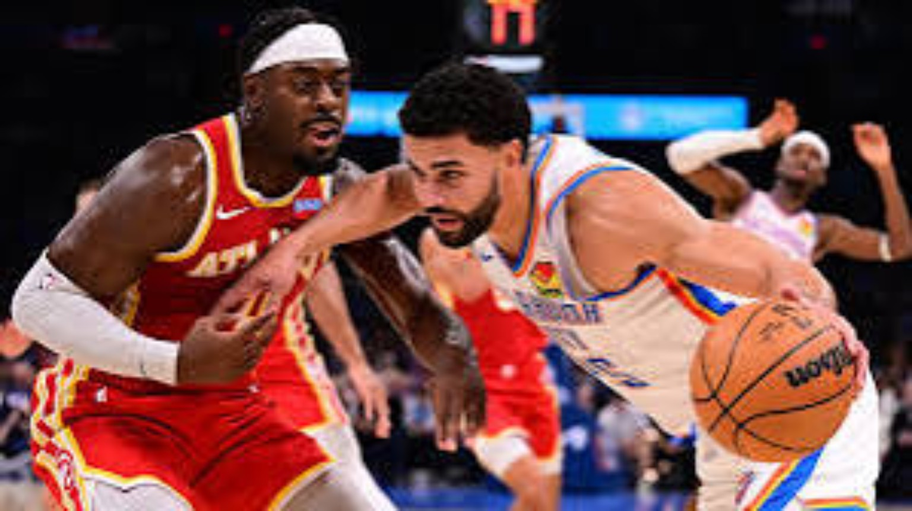
Box Score Spotlight: Onyeka Okongwu 28 PTS; Jalen Johnson 16 PTS, 12 REB, 11 AST; Nickeil Alexander-Walker 19 PTS; Shai Gilgeous-Alexander 34 PTS (OKC)
4DK Deep Dive | What We Saw & What Comes Next
There was a family storyline inside an interconference game with Western playoff implications: cousins Shai Gilgeous-Alexander and Nickeil Alexander-Walker faced each other as Oklahoma City hosted Atlanta. SGA scored 34; NAW contributed 19 in a Hawks win. That contrast is part of the game’s appeal: Shai remains a premier individual offensive engine, while Nickeil has carved out value through complementary scoring and two-way versatility.
Atlanta had more than a personal subplot. Onyeka Okongwu scored 28, Jalen Johnson orchestrated a 16-12-11 triple-double, and former Thunder players Lu Dort and Aaron Wiggins combined for 30 in their return. The Hawks made 20 threes. Oklahoma City rallied to tie entering the fourth, but Atlanta regained control; SGA managed only three points in the final period.
The Thunder have now lost four of five and remain without key injured starters Jalen Williams, Cason Wallace and Chet Holmgren. Our 4DK verdict: injuries explain some of the strain, but they do not eliminate the need for secondary creation and defensive continuity. Atlanta deserves credit for turning ball movement, shooting and its own returning-player emotion into a road win.
Dallas Mavericks 116 — Golden State Warriors 94
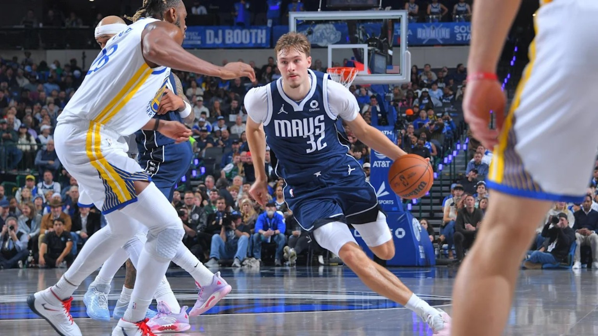
Box Score Spotlight: Cooper Flagg 33 PTS, 5 REB, 9 AST, 3 STL; P.J. Washington Jr. 21 PTS; Will Richard 20 PTS (GSW)
4DK Deep Dive | What We Saw & What Comes Next
Golden State’s problems without Stephen Curry are no longer hypothetical. The Warriors fell to 0-4 on this trip and have lost their three full games without Steph by 38, 21 and 22 points. Curry’s oblique injury removes more than scoring: it removes the off-ball gravity, emergency shot creation and late-clock organization that make everyone else’s job easier. The Warriors must find a way to produce efficient looks without expecting one player to recreate Steph’s influence.
Across the floor, Cooper Flagg looked like the type of young cornerstone who can punish that weakness from multiple angles. His 33 points and nine assists show a player creating for himself and for teammates; three steals add another dimension to the performance. P.J. Washington Jr. contributed 21 and Kyrie Irving 17. Dallas stopped a three-game losing streak and won by 22.
Our 4DK verdict: this was a meaningful Flagg performance because he controlled the game’s offensive shape, not simply its scoring column. Golden State needs structure, not just a temporary replacement scorer, until Curry returns. Dallas should be encouraged by Flagg’s command while still demanding consistency beyond one emphatic win.
Denver Nuggets 105 — Boston Celtics 101
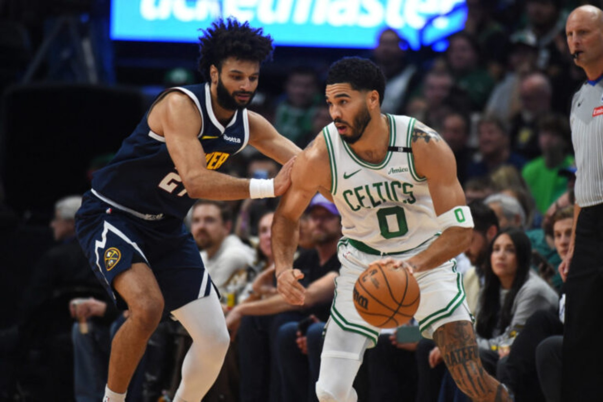
Box Score Spotlight: Nikola Jokić 24 PTS, 8 REB, 9 AST; Neemias Queta 17 PTS, 10 REB (BOS)
4DK Deep Dive | What We Saw & What Comes Next
Denver and Boston gave us a game that belongs in the contender conversation: a 105-101 contest in which neither side could simply overwhelm the other with offense. Nikola Jokić finished with 24 points and nine assists, continuing to make Denver’s half-court attack difficult to defend even when the scoring environment tightens. His value is not only finding the open teammate; it is making the opponent choose which threat it is willing to concede.
Boston stayed within four and got a double-double from Neemias Queta. For the Celtics, the useful question is whether they can reliably create the right shot late against a defense that has time to load up on their best actions. For Denver, this is a quality result, but one close win is not a definitive postseason forecast.
Our 4DK verdict: these are the matchups that reveal the difference between regular-season firepower and playoff adaptability. We want to track bench reliability, defensive counters and closing execution in any future Denver–Boston meeting.
Phoenix Suns 128 — Sacramento Kings 107
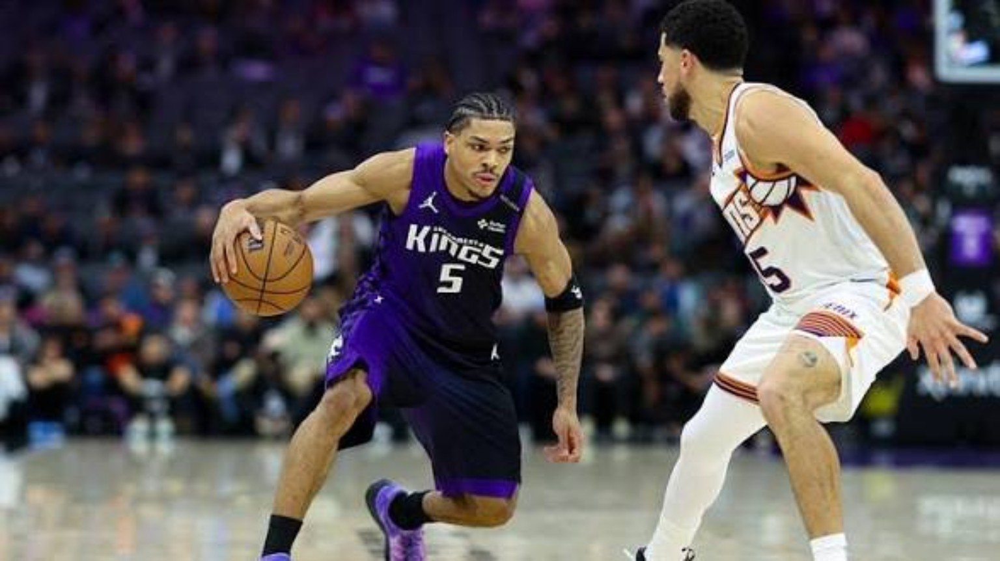
Box Score Spotlight: Devin Booker 29 PTS, 6 AST; Dillon Brooks 29 PTS; Darius Acuff Jr. 36 PTS, 6 AST (SAC)
4DK Deep Dive | What We Saw & What Comes Next
This game was a showcase of two different types of offensive leadership. Devin Booker’s 29 points and six assists helped Phoenix control the game; rookie Darius Acuff Jr. answered with 36 and six for Sacramento. Acuff is showing the confidence and shot creation of a featured guard, but that individual brilliance has not yet translated into winning basketball around him.
Booker was not operating alone. Dillon Brooks also scored 29, and Phoenix won the paint battle 60-42. The Suns have won six of eight after opening 1-5, while Sacramento fell to 1-13 and remains winless at home. That is the real trajectory contrast.
Our 4DK verdict: Acuff deserves Rookie Watch attention because his production is impossible to ignore. But the Kings need a defensive identity and dependable help around him. Phoenix is beginning to show that Booker can lead a balanced attack rather than having to carry every offensive burden.
Utah Jazz 109 — Los Angeles Lakers 97
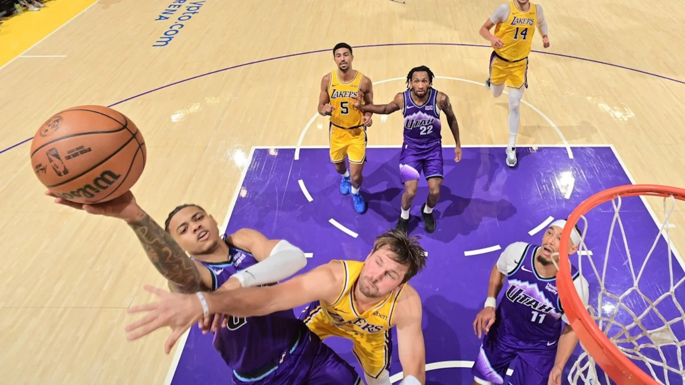
Box Score Spotlight: Keyonte George 30 PTS, 10 AST; Ace Bailey 19 PTS; Luka Dončić 29 PTS (LAL); Mo Bamba 16 REB
4DK Deep Dive | What We Saw & What Comes Next
One night after Brice Sensabaugh’s explosion ended Utah’s 12-game losing streak against the Clippers, the Jazz walked into the Lakers’ building and ended Los Angeles’ nine-game winning streak. This was not merely an opponent getting hot from three. Utah held the league’s highest-scoring offense to 97 points, 38.2% shooting and forced 18 turnovers. That is a defensive achievement worth more attention than the upset label alone.
Keyonte George followed his 30-point, 11-assist night against the Clippers with 30 and 10 against the Lakers. Utah’s 15-0 fourth-quarter run created a 98-83 lead, and the Jazz later answered a Lakers push with another 10 straight points. Ace Bailey scored 10 of his 19 in the fourth. The Jazz were not just surviving; their young guards and wings were making decisions that held up when the game tightened.
Luka Dončić scored 29 but committed nine turnovers and shot 2-for-12 from three. Quentin Grimes added 20 after his 47-point heroics the previous night; Austin Reaves remained out. Our 4DK verdict: Los Angeles’ 9-0 November run was real, but this game exposes how vulnerable even an elite offense becomes when its creation turns inefficient. Utah has only three wins, yet back-to-back victories over both LA teams give this young group a blueprint to build on.